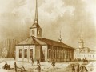
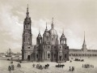
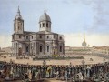
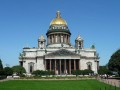
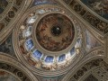

Исаакиевский собор
Исаакиевский собор, названный так в честь игумена И. Далматского, был построен в Санкт-Петербурге в 1858 году. Находится он в центре города и найти его несложно, т. к. площадь носит одноимённое название — Исаакиевская.
История строительства храма началась в 1707 г. когда рядом с Адмиралтейством — там, где сейчас находится памятник работы Э. Фальконе, известный в народе как
Медный всадник,
— возвели первую деревянную церковь Преподобного Исаакия.
 По прошествии десяти лет из-за сырости и отсутствия в храме тепла здание сильно обветшало, и уже в августе 1717 г. император Пётр Великий на этом же месте закладывает первый камень в основание нового собора. В 1727 г. строительные работы были завершены, но и этому храму не довелось простоять долго. Близость Невы и поднимающийся уровень воды постепенно разрушили фундамент и кладку, а из-за пожара 1735 года, вызванного попаданием молнии, сильно пострадали внутренние помещения. Службы больше не велись. После обнаружения трещин на стенах и своде храма, стало ясно, что собор спасти не удастся.
 В 1768 г. при поддержке Екатерины II на новом месте, уже ближе к Мойке, начинаются работы по возведению третьей Исаакиевской церкви по проекту Антонио Ринальди. К сожалению, закончить здание итальянский архитектор не успел, смерть Екатерины заставила его покинуть Россию — строительство остановилось на стадии карниза. Наследник престола Павел I поручает продолжить работы своему придворному архитектору Винченцо Бренна. Последний, выполняя волю императора «упростить», сильно перестарался и исказил замысел Ринальди — собор получился настолько несуразен и нелеп, что своё недоумение и насмешки современники выразили даже в эпиграммах.
 Несмотря на дисгармонию Исаакиевской церкви с архитектурным ансамблем площади того времени, в мае 1802 г. храм всё-таки освятили. В 1809 г. Александр I объявляет конкурс проектов нового Исаакиевского собора. Поиски достойного архитектурного решения заняли девять лет — только в 1818 г. французский зодчий Огюст Монферран преподнёс на суд императора 24 эскиза разных архитектурных стилей, среди которых Александр I выбрал рисунок с изображением современного храма. Но задача Монферрана была непроста: в процессе демонтажа колокольни и западной стены требовалось сохранить три существующие алтаря, а также южную и северную стены.
 26 июня 1819 г. в торжественной обстановке состоялась закладка последнего, четвёртого Исаакиевского собора. Храм строили почти 40 лет. В мае 1958 года в присутствии августейших членов императорской семьи и уже Александра II произошло освящение собора.
Исаакий поражает своей масштабностью: длина и ширина храма почти 100 метров, высота — около 102 метров (он кажется огромным исполином даже по сравнению с высотными зданиями современности!), диаметр наружного свода купола достигает 25-ти метров, собор «поддерживают» 48 гранитных монолитных колонн.
Фронтон северного и восточного портика украшают барельефы скульптора Ф. Лемера («Воскресение Христа» и «И. Далматский останавливает императора Валента»), фронтон западного и южного портика — барельефы работы И. П. Витали («Встреча Исаакия Далматского с императором Феодосием» и продолжение Библейских мотивов — «Поклонение волхвов»). На вершине каждого фронтона установлена скульптура святого апостола-евангелиста: на северном фронтоне — Иоанн, на западном — Марк, на южном — Матфей, на восточном — Лука, по углам фронтона — фигуры учеников И. Христа. На фризе одного из портиков можно увидеть и барельеф самого архитектора.
Во время возведения храма ходила легенда, что Монферран опасался собственной кончины, предсказанной ему по завершению строительства, поэтому никуда не торопился. Легенда не обманула… по окончании работ в течение месяца его не стало. Исполнить последнюю волю архитектора — быть погребённым в собственном творении — не посчитали должным.
 Внутреннее убранство храма также изящно: живопись и скульптуры выполнены известными мастерами того времени: Ф. Бруни, К. Брюлловым, П. Басиным (композиция «Нагорная проповедь», «Лобзание Иуды»), П. Клодтом (скульптуры «Несение креста», «Положение во гроб»). При отделке интерьера был использован лазурит, мрамор, гранит, порфир, золочёная бронза, малахит и мозаика.
Исаакиевский собор не сразу понравился петербуржцам: вначале он показался жутко непропорциональным, и горожане прозвали его
Чернильницей. Это прозвище, закрепившееся за собором ещё в XIX веке, можно услышать и сегодня, но называют так скорее с любовью, нежели с осуждением. Позднее появилось и
Исаакий — этот вариант бытует в основном у молодёжи.
Если Вам есть, что добавить, или Вы с чем-то не согласны, обязательно напишите об этом в комментариях. Это позволит сделать статью более точной и содержательной.
 Улица Ленина ― от Газетного переулка до улицы Свободы ― самое озеленённое место города, так как по обеим её сторонам разбиты два сквера ― Верхний городской сад и Нижний городской сад.В конце XIX века на месте Верхнего городского сада находилась усадьба, п ...
Улица Ленина ― от Газетного переулка до улицы Свободы ― самое озеленённое место города, так как по обеим её сторонам разбиты два сквера ― Верхний городской сад и Нижний городской сад.В конце XIX века на месте Верхнего городского сада находилась усадьба, п ...


{kind=link}
{kind=link}
{kind=link}
{kind=link}
{kind=link}
{kind=link}
{kind=link}